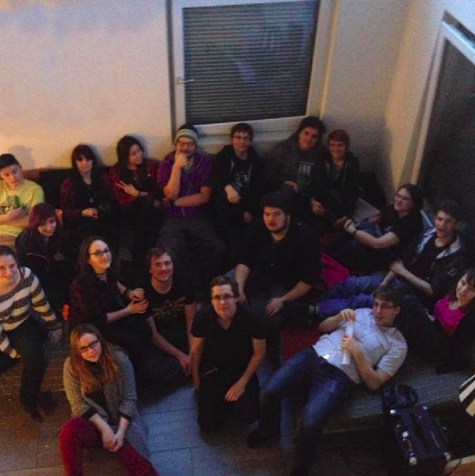
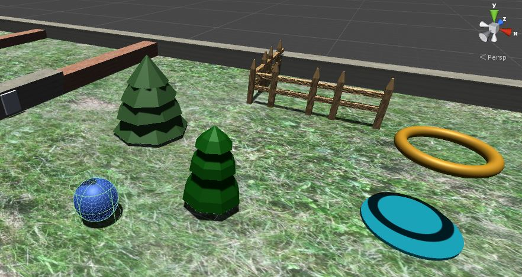

Exploring Exoplanets
Exploring Exoplanets is an art exhibition based on the scientific results of the CHAMELEON network.
"If you want to go fast, go alone; if you want to go far, go together" - Anonymus
Developing a game is much more than just coding. It requires creativity, design and teamwork. Within TeamDerpalert we embraced these challenges, improved our skills and worked together to create our very own game.

During high, I learned coding and immediately fell in love with it. After learning the basics, we were assigned a project in which we had to design our own small computer game. This project was so much fun that I decided to do something similar outside of school. I asked around and soon found over 20 people who were interested in joining. I did not just catch the attention of programmers, but also 3D-modelers, screenplay writers, level designer, business majors and music majors. None of us had any previous experience but what we lacked in knowledge we made up with enthusiasm.

Over the course of 1.5 years, we developed a small game where one geometric shape has to defend itself against all the others. Even though we never officially published the game, I consider the project a huge success. Learning how to work on things that inspire you, within a team of others that share your passion and learning how to efficiently collaborate was an amazing way to spend my free time.
Exploring Exoplanets is an art exhibition based on the scientific results of the CHAMELEON network.
SEADS (Space Ecologies Art and Design) is a transdisciplinary and cross-cultural collective of artists, scientists, engineers and activists.
A group of interdisciplinary projects with the goal to tackle future problems already today.
Together with 3 friends, I co-founded the MEME. Every year in January, the MEME presents memes all around exoplanets, astrophysics and student life.
ARIS is the rocket team of ETH Zuerich. In 2019, I was the payload team leader and together we won 2nd place.
A week on Diavolezza at 3000m trying to observe stellar clusters during a snow storm.
The SYPT is a annual competition where high school students have to prepare, conduct and present a physics experiment.
A collaboration between writers and exoplanet scientists to create short stories, poems and radio plays based on contemporary research.
Writing stories and bringing them to life has always been a fascination of mine. With Dungeons and Dragons I have a way to live it.